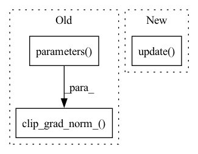

Pattern ID :593

Before Change
scaler.scale(loss).backward()
// Gradient clipping
scaler.unscale_(optimizer)
torch.nn.utils.clip_grad_norm_(model.parameters(), 1.0)
// Update generator weight
scaler.step(optimizer)
scaler.update()
After Change
// measure accuracy and record loss
psnr = 10. * torch.log10(1. / torch.mean((sr - hr) ** 2))
losses.update(loss.item(), lr.size(0))
psnres.update(psnr.item(), lr.size(0))
// measure elapsed time
batch_time.update(time.time() - end)
In pattern: SUPERPATTERN
Frequency: 3
Non-data size: 3
Instances
Fragment ID: 2969181
Project Name: lornatang/espcn-pytorch
Commit Name: 3d7da32ace2da2b908bad2a32243b464f206e72a
Time: 2021-11-30
Author: liuchangyu1111@gmail.com
File Name: train.py
M Class Name: AnonimousClass
N Class Name: AnonimousClass
M Method Name: train(7)
N Method Name: train(8)
M Parent Class:
N Parent Class:
M File Name: train.py
N File Name: train.py
M Start Line: 83
M End Line: 117
N Start Line: 156
N End Line: 203
'>
Before Change
phase="Validation")
scaler.unscale_(optimizer)
nn.utils.clip_grad_norm_(diffusion_prior.parameters(), max_grad_norm)
scaler.step(optimizer)
scaler.update()
optimizer.zero_grad()
After Change
dp_loss_type,
phase="Validation")
trainer.update()
////// Test run //////
test_set_size = int(test_percent*train_set_size)
start = train_set_size+val_set_size
'>
Fragment ID: 2969183
Project Name: lucidrains/dalle2-pytorch
Commit Name: 71d0c4edaee5823e146870c1c914de26e561e3c5
Time: 2022-05-15
Author: lucidrains@gmail.com
File Name: train_diffusion_prior.py
M Class Name: AnonimousClass
N Class Name: AnonimousClass
M Method Name: train(30)
N Method Name: train(30)
M Parent Class:
N Parent Class:
M File Name: train_diffusion_prior.py
N File Name: train_diffusion_prior.py
M Start Line: 130
M End Line: 235
N Start Line: 133
N End Line: 248
'>
Before Change
// Clip grads to counter exploding grads
max_norm = self._config["clip_max_norm"]
if max_norm > 0:
torch.nn.utils.clip_grad_norm_(self._model.parameters(), max_norm)
self._optimizer.step()
loss_agg += loss_abs.item()
After Change
// torch.nn.utils.clip_grad_norm_(self._model.parameters(), max_norm)
self._scaler.step(self._optimizer)
self._scaler.update()
loss_agg += loss_abs.item()
loss_bbox_agg += losses["reg"].item()
loss_cls_agg += losses["cls"].item()
'>
Fragment ID: 2969184
Project Name: bwittmann/transoar
Commit Name: 67ff1090209f6d8c530711c83549b5eb060e64d6
Time: 2022-01-23
Author: bastian.wittmann@tum.de
File Name: transoar/trainer.py
M Class Name: Trainer
N Class Name: Trainer
M Method Name: _train_one_epoch(2)
N Method Name: _train_one_epoch(2)
M Parent Class:
N Parent Class:
M File Name: transoar/trainer.py
N File Name: transoar/trainer.py
M Start Line: 47
M End Line: 70
N Start Line: 50
N End Line: 82